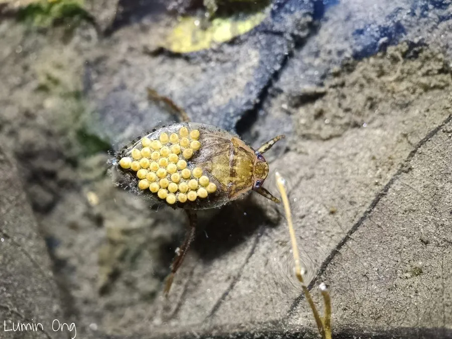

昆虫 · 动物界
负子蝽 Sphaerodema rusticum

雄虫把卵块背在背上直到孵化的水生蝽类，捕食小鱼与蝌蚪，被捉时刺吸疼痛，常见于池塘稻田。
- 分类
- 门节肢动物门纲昆虫纲目半翅目科负子蝽科属负子蝽属
- 栖息环境
- 池塘、稻田、沟渠等静水，以及水草茂密的浅水区
- 地理分布
- 中国南北各地及东南亚、南亚
- 保护级别
- 常见种，无保护级别；水质污染会使种群下降
物种志
负子蝽的成虫体长约二至二点五厘米，体扁而宽，黄褐至灰褐色，前足短而粗，适于抱握，后足扁平成桨状，善于游泳。头部前端有一个短粗的刺吸式口器，能刺穿小鱼皮肤。翅发达，夜间可飞离水面。雄虫腹部背面有一层绒毛，交配后雌虫把卵产在雄虫背上，形成一块密集的卵块。
它分布于中国南北各地以及东南亚和南亚，栖息在池塘、稻田、沟渠等静水中，捕食小鱼、蝌蚪和水生昆虫。雄虫背着几十粒卵在水里游动，直到卵孵化才卸下负担，期间很少取食，是昆虫中少见的雄性育幼行为。人被它刺吸时会感到剧痛，伤口可能红肿，捕捉时应避免用手直接接触。它对水质变化较敏感，农药和清淤会显著减少其数量。
形态与习性
- 体长约二至二点五厘米，体扁而宽
- 足前足粗短善抱握，后足桨状善游泳
- 育幼雌虫产卵于雄虫背上，雄虫背负至孵化
- 食性捕食小鱼、蝌蚪与水生昆虫
- 风险被刺吸时剧痛，伤口可能红肿
- 习性夜间可飞离水面，有趋光性
趣味知识
- 雌虫把卵直接产在雄虫背上，雄虫背着几十粒卵游到孵化，堪称虫界奶爸。
- 它的一口像针扎，被刺中的人常疼得跳起来，因此下水摸鱼时要留神。
- 它翅膀发达，夜里会被灯光吸引，落在水面附近的地面上。